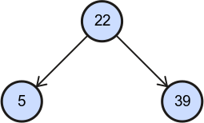
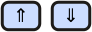
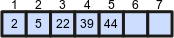

Instructions
There you find how to use BinaryTreeVisualiser.
Application is consisted of two pages.
At the first one you find binary heap + priority queue implementation
(random binary heap, build binary heap, insert, delete, extract max, get max, heap sort).
At the other one you find binary search tree implementation
(random binary search tree, insert, find, delete, get max, get min, get predecessor, get successor, to preorder array, to inorder (sorted) array, to postorder array).
If you don't know what a binary search tree, a binary heap or any of listed algorithms means, visit this section.
See meanings of used graphic elements to understand animations
and read what control buttons do for easier work with the application.
Graphic elements
There are listed all graphic elements used in this application and their meanings.
| Graphic | Meaning | Description |
|---|---|---|

|
Node | A node with his value. |
| Selected node | Selected node is highlighted with a red stroke. You can select any node by clicking on it. | |
| Edge | An edge is a reference from one node to another. Referenced node is called child of referring node. Referring node is called parent of referenced node. | |
|  | Parent and his children | In binary trees there are maximum two children of a node - left child and right child. |

|
Comparison signs | Very often algorithms compare two nodes (their values). In that case one of this sign will be shown in the middle of them. |

|
Continue in parent/ |
Algorithms usually traverse a tree or recursively call themselves on one child of just processing node. These graphic elements will show you which node is next in line. |

|
No left/ |
A node do not have left/right child. |
|  | Enter/ |
A start/end visualisation of an algorithms that traverse a tree. |
| Came from left/ |
Sometimes it is important if an algorithm came from left or right child. These arrows indicate that the condition is satisfied. | |

|
Did not come from left/ |
As previous, but the condition is not satisfied. |
|  | Array | A tree can be represented by an array, can be transformed to the array or can be build from the array. Array is indexed (1, 2, 3, ... 7) and has values (2, 5, 22, 39, 44). Last two indexes are still empty. |
Controls
Controls are divided into three categories. You can control animation, execute algorithms and go back in history.
Animation controls
These buttons control currently playing animation and can go to previous or next animation. There is shown only a play button or only a pause pause button at a time. Buttons are disabled if there is no appropriate anomation.
| Button | Meaning | Description |
|---|---|---|
| Play an animation | This button starts playing a paused animation. Automatically an animation is playing. | |
| Pause an animation | This button pauses playing animation. | |
| Play an animation again | Move an animation to the start and start playing it. | |
| Skip an animation | Some animations take long time. This button move an animation to the end. Animation is stopped so next algorithm in history (if any) will not be played. | |
| Go to previous animation | Goes to previous algorithm (animation) and start playing it. | |
| Go to next animation | Goes to next algorithm (animation) and start playing it. | |
| Play animations one after another | If this check box is checked, next animation will start after the end of current animation automatically. | |
| Speed of move: | Set a speed of move | There are two kind of steps of algorithms. Animations of the first kind take time to move a graphic element. Animations of the other kind take time to show something. This button set duration of the first kind of step. |
| Duration of a step: | Set a duration of a step | As previous, but this button set duration of the other kind of step. |
History controls
All executed algorithms are shown in history. You can go back and play them again or change history.
| Button | Meaning | Description |
|---|---|---|
| List of executed algorithms | There are listed all executed algorithms. The first one is at the top of the list. New algorithms are added to the end. You can change the history by playing earlier algorithm (animation) and then executing another algorithm. Current algorithm (animation) is selected. You can selected another one by double-click. |
Algorithms controls
These buttons are most important. Clicking on an algorithm button execute selected algorithm and start an animation.
Also the algorithm is added to history, so you can go back to this point and play this animation again later.
Some algorithms need an input to work. Usually it is a value or a node.
Value is entered as a string at text input. Node is selected by clicking on it.
Some algorithms return a value. If it is a node, the node will be selected at the end of an animation.
It it is an array, the array will be shown at the end of an animation.
These buttons are enabled only if the animation is stopped - last animation was all played.
If you want to find out more informations about these algorithms, see pseudocodes.
| Algorithm (Binary Heap) | Meaning | Description |
|---|---|---|
| min: max: | Create a random heap | Creates a random binary heap. Values of created nodes are from given interval. |
| array: | Build a heap | Builds a binary heap from given array. The array is entered as string of values separated by ',' (comma). |
| value: | Insert a node | Creates a new node with given value and inserts it into a heap. |
| selected node | Delete a node | Deletes selected node from a heap. |
| Extract maximum value node | Same as delete of root node. The node with maximum value is always root in a binary heap. | |
| Get maximum value node | Returns root of tree, because the node with maximum value is always root in a binary heap. | |
| Sort a heap | This algorithm sorts a heap. The result is shown in an array. |
| Algorithm (Binary Search Tree) | Meaning | Description |
|---|---|---|
| min: max: | Create a random search tree | Creates a random binary search tree. Values of created nodes are from given interval. |
| value: | Insert a node | Creates a new node with given value and inserts it into a binary search tree. |
| value: | Find a node | Finds first occurrence of a node with given value. |
| selected node | Delete a node | Deletes selected node from a binary search tree. |
| of selected (sub)tree | Get maximum value node | Finds and returns node with maximum value of selected subtree. Select subtree by selecting its root. If no node is selected, root of whole tree will be selected. |
| of selected (sub)tree | Get minimum value node | Finds and returns node with minimum value of selected subtree. Select subtree by selecting its root. If no node is selected, root of whole tree will be selected. |
| of selected node | Get a predecessor | Gets a predecessor of selected node. Predecessor is a node with first previous lower value. |
| of selected node | Get a successor | Gets a successor of selected node. Successor is a node with first next higher value. |
| Order nodes into an pre-order array | Traverses a tree in pre-order walk. Shows the pre-order array. | |
| (To Sorted Array) | Order nodes into an in-order (sorted) array | Traverses a tree in in-order walk. Shows the in-order array. This array is sorted by values. |
| Order nodes into an post-order array | Traverses a tree in post-order walk. Show the post-order array. |